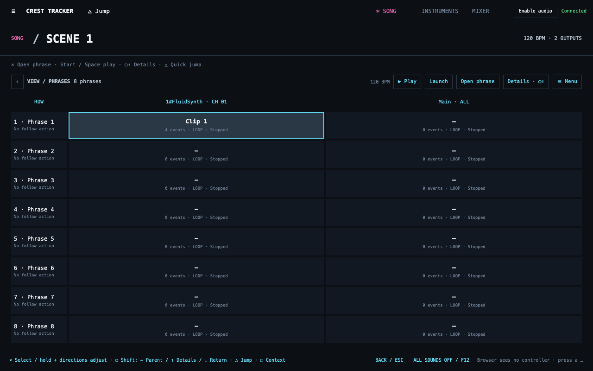
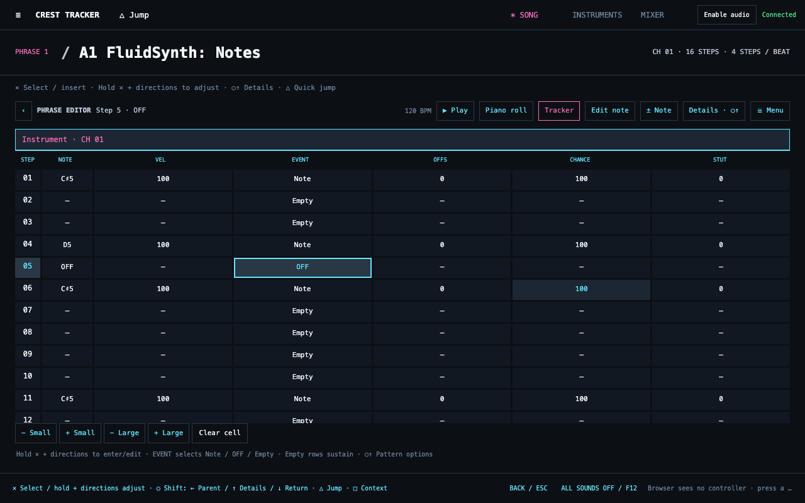
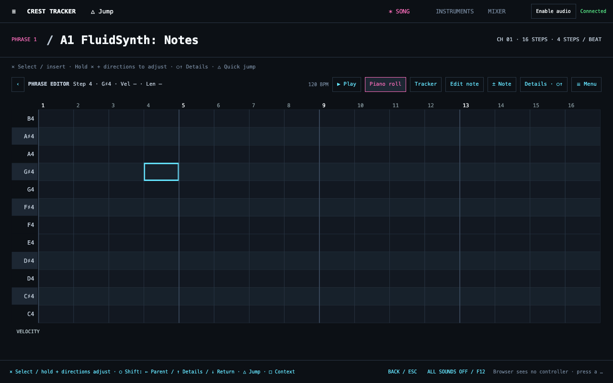
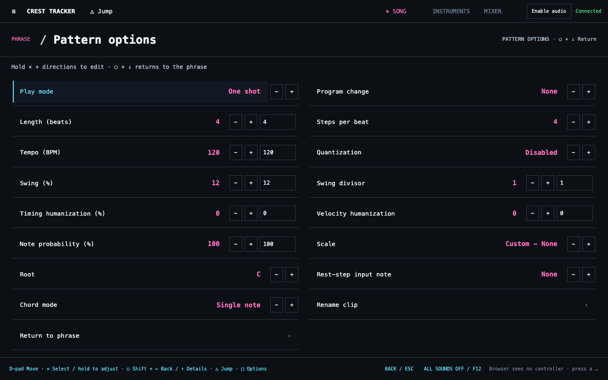
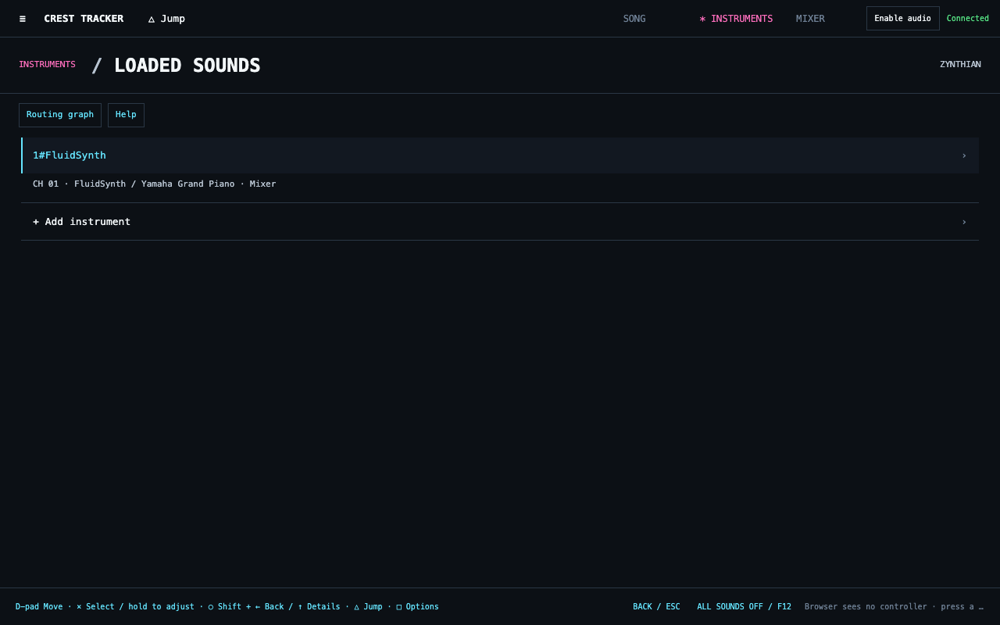
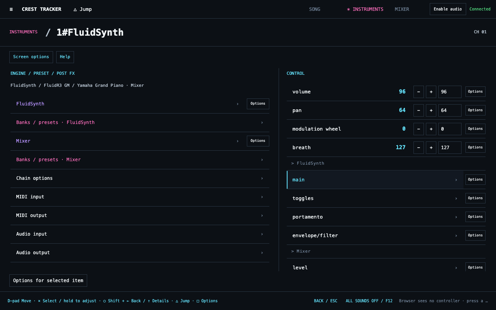
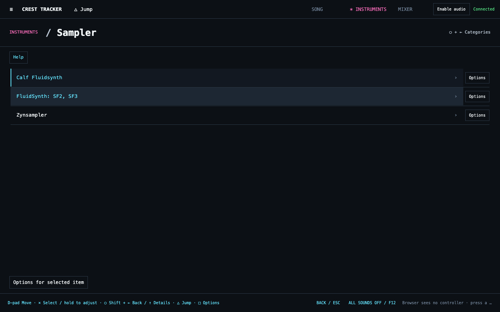
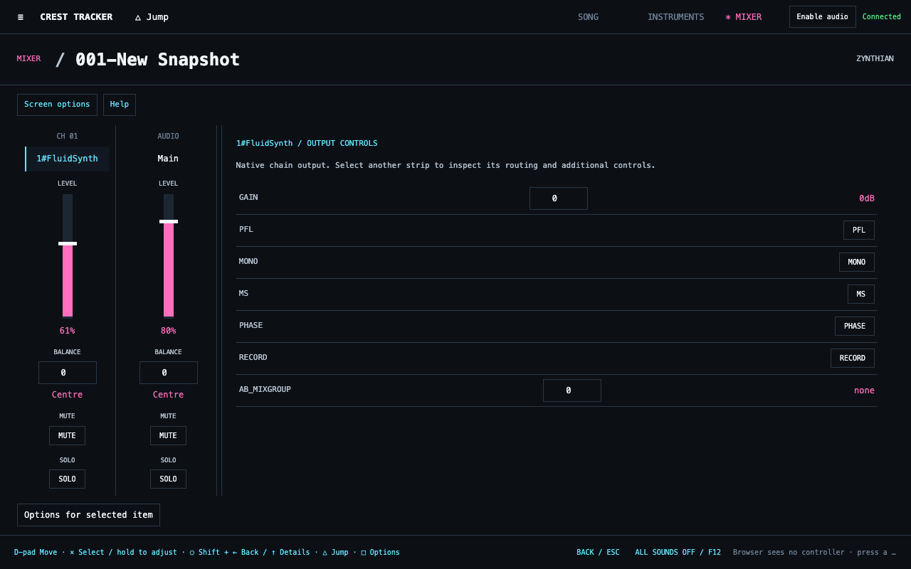
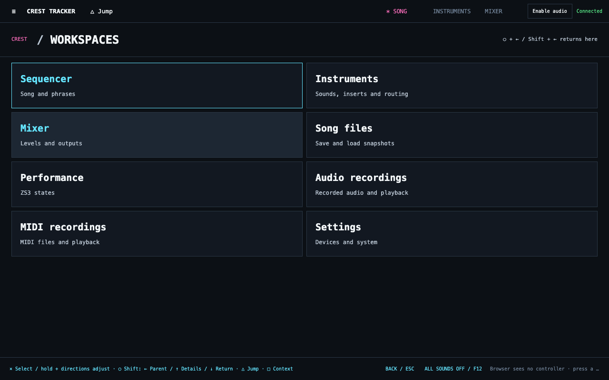
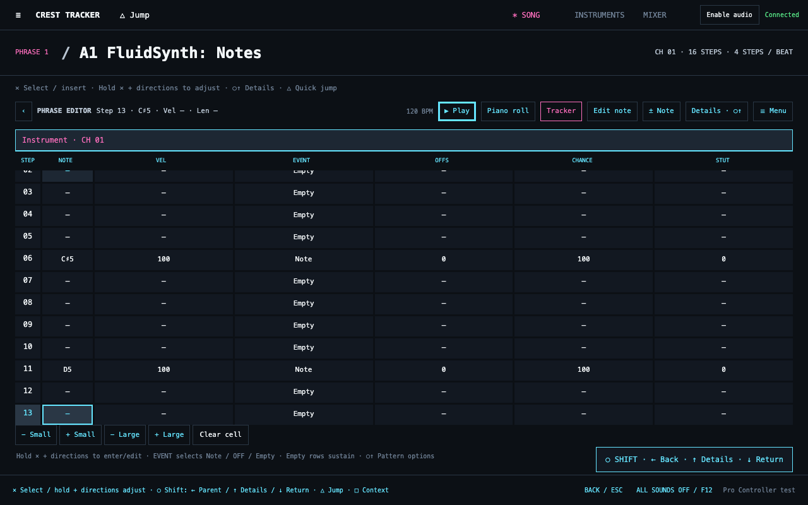

Visual ingredients
Dark panels, square borders, dense monospace rows, large workspace titles, cyan focus, pink values and green status. Azeret Mono is used when installed; system monospace fonts provide the fallback.
- Canvas #0c1015
- Panel #121821
- Raised #1d2733
- Border #2a3745
- Focus #65e5ff
- Value #ff6fbe
- Status #58e887
Screen snapshots
Select an image to view its full resolution.



















